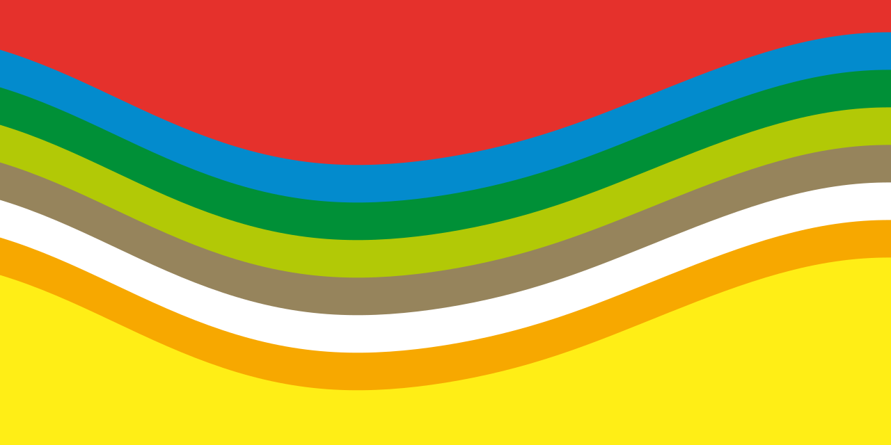

Gym Circuit Logger
A phone-first workout logger, with a demo and gym setup tools.
Software development and technical leadership
I work with people to solve practical problems and build better products. I’m an assertive partner, bringing creative thinking, technical experience and a candid approach to working together.
Get in touch
Selected work
A phone-first workout logger, with a demo and gym setup tools.
Shared colours, typography and reusable presentation templates.
A DJ-to-musician performance tool, built at the ADE Lab Hackathon.